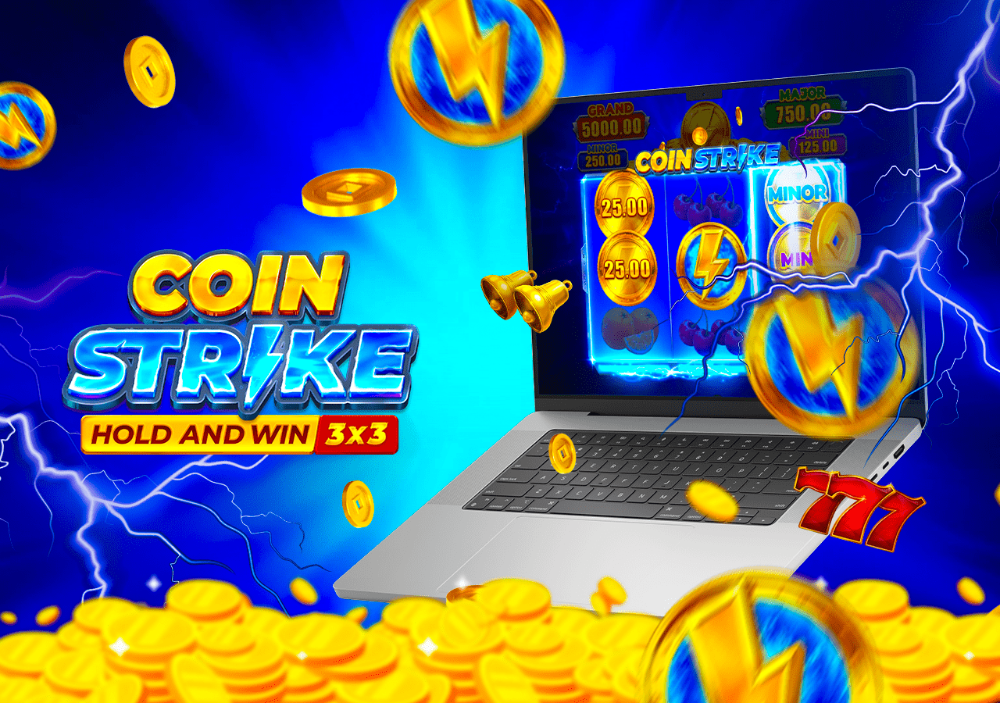
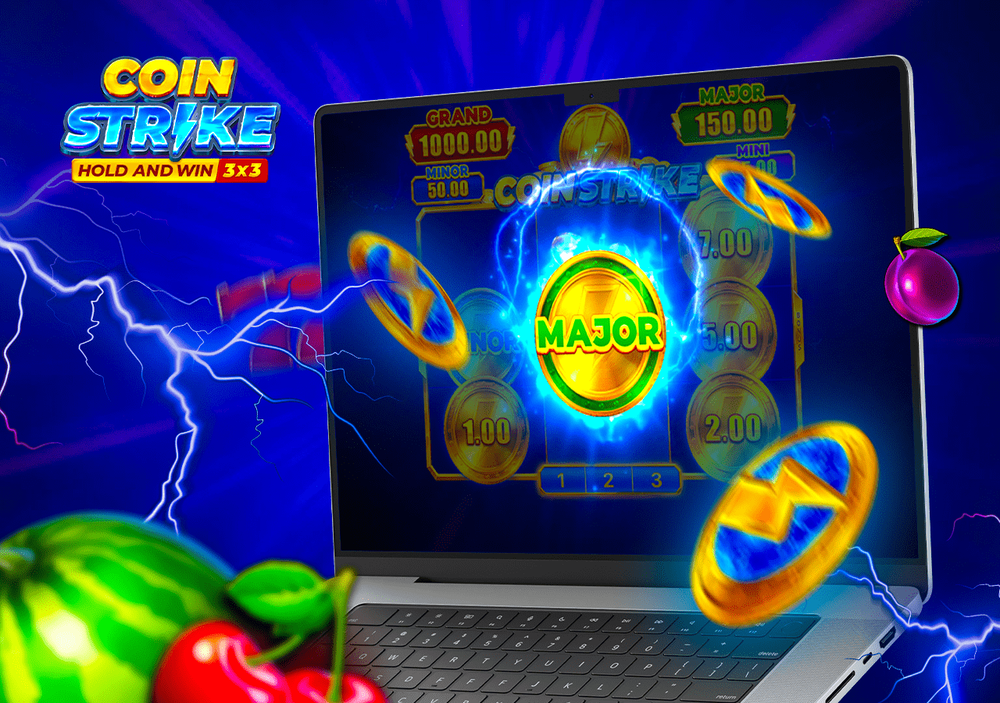
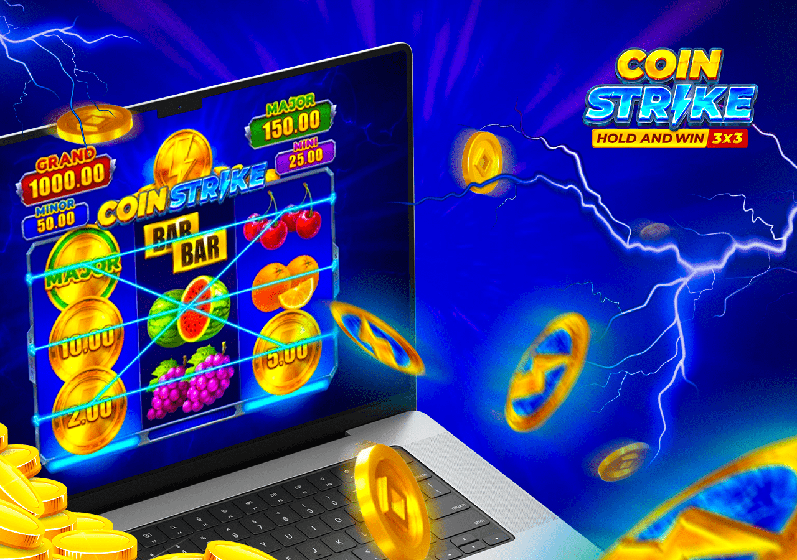
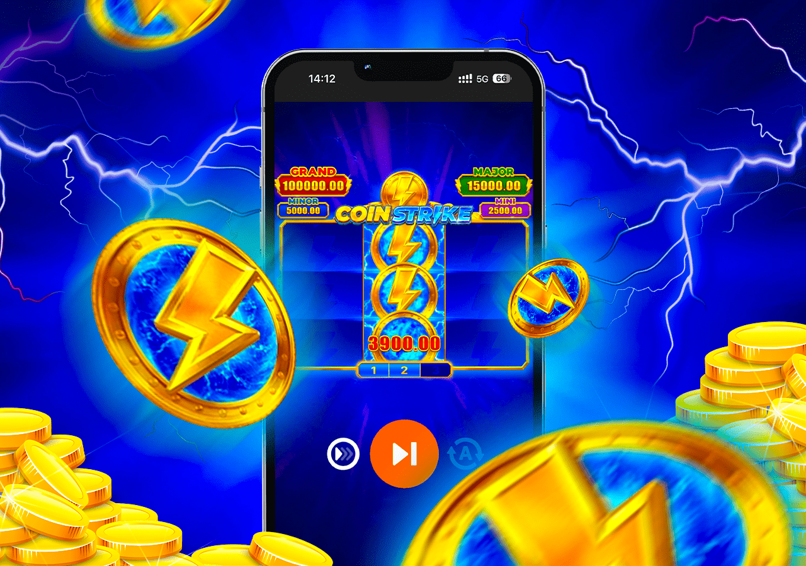

Ready to dive into Coin Strike: Hold and Win? Follow this step-by-step guide to start playing at a trusted Coin Strike casino like RocketPlay, WinSpirit, King Billy, or National Casino:
Coin Strike: Hold and Win – Spin & Win Big!
Are you ready for an electrifying slot adventure? Coin Strike: Hold and Win, crafted by Playson, is your gateway to thrilling gameplay and massive payouts at top Australian Coin Strike casino platforms like RocketPlay, WinSpirit, King Billy, and National Casino. Dive into the action-packed world of Coin Strike today and start spinning for epic rewards!
Play Coin Strike 🎮
The Best Sites to
Play Coin Strike in Australia 2025
-
 Welcome Bonus100% up to AU$1,500 + 100 Free Spins
Welcome Bonus100% up to AU$1,500 + 100 Free SpinsClaim a AU$1,500 bonus to play Coin Strike at RocketPlay!
-
 Welcome Bonus100% up to AU$600 + 50 Free Spins
Welcome Bonus100% up to AU$600 + 50 Free SpinsKick off with a AU$600 bonus for Coin Strike at WinSpirit!
-
 Welcome Bonus100% up to AU$500 + 100 Free Spins
Welcome Bonus100% up to AU$500 + 100 Free SpinsEnjoy Coin Strike with a AU$500 bonus at National Casino!
-
Welcome Bonus100% up to AU$2,500 + 250 Free Spins
Spin Coin Strike with a AU$2,500 bonus at King Billy!
These Coin Strike casino platforms are carefully selected for their reliability, user-friendly interfaces, and commitment to player satisfaction. By choosing a trusted site like RocketPlay, WinSpirit, King Billy, or National Casino, you can maximize your chances of hitting the Coin Strike Hold and Win max win while enjoying a secure and exciting gaming experience tailored for Australian players in 2025.
What is Coin Strike: Hold and Win?
Coin Strike: Hold and Win, developed by Playson, is a high-energy online slot that combines classic slot aesthetics with modern, innovative features. Built on a compact 3x3 reel grid with 5 fixed paylines, the Coin Strike game captivates players with its vibrant fruit symbols, golden coins, and the signature Hold and Win bonus round. Designed for both casual players and high rollers, Coin Strike: Hold and Win offers a Coin Strike Hold and Win rtp of 95.66%, medium-high volatility, and a Coin Strike Hold and Win max win of 5,150x your stake, making it a top choice for Coin Strike Hold and Win real money enthusiasts in Australia.
The game’s retro-modern design, intuitive controls, and thrilling bonus features make it stand out in the crowded online slot market. Whether you’re spinning at RocketPlay, WinSpirit, King Billy, or National Casino, the Coin Strike game delivers a balanced mix of frequent smaller wins and the potential for massive jackpots, appealing to a wide range of players. Its mobile compatibility ensures you can enjoy Coin Strike on the go, with seamless performance across devices. The Hold and Win feature, combined with Playson’s innovative design, creates an engaging experience that keeps players coming back for more.
Screenshots
The Coin Strike: Hold and Win slot boasts a visually stunning interface with a retro-inspired design. Classic symbols like cherries, bells, sevens, and golden coins dominate the reels, set against a sleek, modern backdrop. The Hold and Win feature comes to life with dynamic animations, as golden coins lock into place and lightning bolts enhance payouts. The user-friendly controls allow easy bet adjustments, spin activation, and access to bonus features, making the Coin Strike game accessible to both new and seasoned players. The vibrant colors and smooth animations enhance the thrill of chasing the Coin Strike Hold and Win max win.
The Mechanics
The Coin Strike: Hold and Win slot operates on a straightforward 3x3 grid with 5 fixed paylines. Players can wager between AU$0.20 and AU$100 per spin, catering to various budgets. The gameplay revolves around landing matching symbols across paylines, but the Hold and Win feature is the heart of the experience:
- Triggering Hold and Win: Land three or more coin symbols to activate the Coin Strike Hold and Win bonus round. These coins lock in place, and you’re awarded three respins to collect additional coins.
- Respin Mechanics: Each new coin resets the respin counter to three. Coins carry random cash values or one of three jackpots: Mini (25x), Major (100x), or Mega (1,000x).
- Strike Feature: A lightning bolt symbol can randomly boost coin values during the bonus round, increasing your Coin Strike Hold and Win real money payouts.
- Max Win Potential: Filling all nine reel positions with coins awards the Coin Strike Hold and Win max win of 5,150x your bet.
Additional features include Autoplay for automated spins and Turbo mode for faster gameplay, ideal for players looking to maximize their spins in a session. The Coin Strike Hold and Win rtp of 95.66% ensures a fair balance of risk and reward, making every spin exciting. The game’s medium-high volatility means players can expect a mix of regular payouts and the potential for significant wins, especially during the Hold and Win round.
The Integrity
The Coin Strike game guarantees fair play through a certified Random Number Generator (RNG), ensuring random and unbiased outcomes for every spin. Playson, a trusted developer licensed by authorities like the Malta Gaming Authority, ensures the Coin Strike: Hold and Win slot meets strict regulatory standards. Advanced encryption protects player data, providing a secure gaming experience at reputable Coin Strike casino platforms like RocketPlay, WinSpirit, King Billy, and National Casino. The transparent Coin Strike Hold and Win rtp of 95.66% gives players confidence in the game’s fairness, making it a reliable choice for Coin Strike Hold and Win real money gaming.
Best Websites to Play Coin Strike
Choosing a reliable Coin Strike casino is essential for a safe and rewarding experience. We’ve evaluated top Australian online casinos offering Coin Strike: Hold and Win based on licensing, bonuses, game variety, and user experience. Below is a table summarizing key features of these platforms:
|
Casino |
Year Founded |
License |
Banking Methods |
Welcome Bonus |
|
RocketPlay |
2020 |
Curacao |
Neosurf, Crypto, Visa, Mastercard, Skrill |
100% up to AU$1,500 + 100 FS |
|
WinSpirit |
2022 |
Curacao |
Crypto, Neosurf, Bank Transfer, UPI |
100% up to AU$600 + 50 FS |
|
King Billy |
2017 |
Curacao |
Visa, Mastercard, Crypto, Neosurf, Bank Transfer |
100% up to AU$2,500 + 250 FS |
|
National Casino |
2021 |
Curacao |
Neosurf, Crypto, Visa, Mastercard, Skrill |
100% up to AU$500 + 100 FS |
RocketPlay
RocketPlay is a premier Coin Strike casino with a Curacao license, offering over 3,000 games, including Coin Strike: Hold and Win by Playson. Its mobile-optimized platform and fast withdrawals make it ideal for Australian players. The welcome bonus of 100% up to AU$1,500 + 100 free spins boosts your chances of hitting the Coin Strike Hold and Win max win. RocketPlay supports crypto, Neosurf, and traditional payment methods, ensuring seamless transactions for Coin Strike Hold and Win real money gameplay. The platform’s sleek design and 24/7 customer support enhance the overall experience.
WinSpirit
WinSpirit, a newer Coin Strike casino, delivers a fresh gaming experience with a Curacao license and a diverse slot library. Its 100% welcome bonus up to AU$600 + 50 free spins is perfect for spinning Coin Strike: Hold and Win. With support for crypto, UPI, and Neosurf, WinSpirit ensures fast and secure deposits and withdrawals. The platform’s user-friendly interface and regular promotions make it a great choice for Coin Strike game enthusiasts seeking Coin Strike Hold and Win real money opportunities.
King Billy
King Billy, a well-established Coin Strike casino, offers a Curacao-licensed platform with over 5,000 games, including Coin Strike: Hold and Win. Its generous welcome package of 100% up to AU$2,500 + 250 free spins provides ample opportunities to explore the Coin Strike game. With support for Visa, Mastercard, crypto, and Neosurf, King Billy ensures secure and fast transactions. The platform’s medieval-themed interface and regular tournaments add excitement to your Coin Strike Hold and Win real money experience.
National Casino
National Casino is a modern Coin Strike casino with a Curacao license, boasting a vast game library that includes Coin Strike: Hold and Win. Its welcome bonus of 100% up to AU$500 + 100 free spins enhances your Coin Strike Hold and Win real money gameplay. With support for Neosurf, crypto, and traditional payment methods, National Casino offers seamless transactions and a user-friendly interface. Regular promotions and a VIP program make it an excellent choice for Coin Strike game players.
How to Choose a Coin Strike Casino?
Selecting the ideal Coin Strike casino requires careful consideration to ensure a safe and enjoyable experience. Here are key factors to evaluate when choosing a platform for Coin Strike: Hold and Win:
- Licensing: Verify that the casino holds a valid license, such as Curacao, to ensure compliance with regulatory standards. Check the website’s footer or Terms and Conditions for licensing details.
- Bonuses: Look for generous welcome bonuses, free spins, and Coin Strike game-specific promotions. Ensure the terms are transparent, with clear wagering requirements and validity periods.
- User Interface: Choose a platform with intuitive navigation, mobile compatibility, and a clean design. Features like dark mode and smooth transitions enhance the Coin Strike game experience.
- Security: Confirm the casino uses SSL encryption, firewall protection, and regular audits to safeguard your data during Coin Strike Hold and Win real money gameplay.
- Reputation: Research player reviews on trusted platforms like AskGamblers or Trustpilot to gauge the casino’s reliability and customer satisfaction.
- Banking Methods: Opt for casinos supporting local payment options like Neosurf, UPI, or crypto, with fast processing times and minimal fees.
- Customer Support: Test the responsiveness of 24/7 support via live chat or email. Contact the casino to inquire about Coin Strike bonuses or features to assess their service quality.
By prioritizing these factors, you can find a reputable Coin Strike casino like RocketPlay, WinSpirit, King Billy, or National Casino to enjoy Coin Strike: Hold and Win safely and maximize your winning potential.
How to Start Playing Coin Strike

- Choose a Casino: Select a licensed platform like RocketPlay or WinSpirit based on the criteria above. Ensure it offers Coin Strike: Hold and Win and attractive bonuses.
- Create an Account: Visit the casino’s website and complete the registration process. Provide your email, create a password, and verify your account via email or SMS.
- Log In: After registration, log in using your credentials. Most platforms redirect you to the homepage automatically.
- Verify Your Identity: Submit proof of identity, address, and payment method for KYC verification to enable smooth withdrawals of Coin Strike Hold and Win real money winnings.
- Deposit Funds: Navigate to the banking section, choose a payment method (e.g., Neosurf, crypto), and deposit an amount that qualifies for the welcome bonus.
- Access Coin Strike: Go to the casino’s game library, filter for slots, and select Coin Strike: Hold and Win by Playson. Launch the game to start spinning.
- Withdraw Winnings: After securing wins, visit the banking section to withdraw your Coin Strike Hold and Win real money via a supported payment method.
For beginners, start with the Coin Strike demo mode to familiarize yourself with the game mechanics before wagering real money. This approach helps you understand the Hold and Win feature and develop a strategy for chasing the Coin Strike Hold and Win max win.
Coin Strike Demo
The Coin Strike demo is the perfect way to explore Coin Strike: Hold and Win without risking real money. Available at top Coin Strike casino platforms like RocketPlay, WinSpirit, King Billy, and National Casino, the demo mode provides virtual credits for practice bets, allowing you to test the game’s features, including the Hold and Win bonus round, Autoplay, and Turbo mode. The demo retains full feature parity with the real-money version, ensuring you experience the same vibrant graphics, mechanics, and jackpot potential.
To access the Coin Strike demo, create an account at a trusted casino, locate Coin Strike: Hold and Win in the game library, and select the “Demo” or “Play for Free” option. This risk-free environment is ideal for learning the Coin Strike game’s volatility, understanding the Coin Strike Hold and Win rtp of 95.66%, and practicing strategies before playing for Coin Strike Hold and Win real money.

Differences Between Coin Strike Game in Different Casinos
While Playson offers a single version of Coin Strike: Hold and Win, slight variations may occur across Coin Strike casino platforms. These differences don’t affect the core mechanics but can impact the player experience:
- Bet Limits: Some casinos, like RocketPlay, allow bets up to AU$100 per spin, while others, like WinSpirit, may cap bets at AU$50. Check the limits to match your budget.
- Interface Variations: The Coin Strike game interface may differ slightly, with some platforms offering a minimalist design and others adding features like quick-spin toggles or enhanced stats displays.
- Bonuses and Promotions: Casinos like King Billy and National Casino offer Coin Strike-specific bonuses, such as free spins or deposit matches, which vary in size and wagering requirements.
- Similar Games: Some platforms include similar Hold and Win slots, like Playson’s Royal Coins or Buffalo Power, alongside Coin Strike, offering variety for players.
These variations allow you to choose a Coin Strike casino that aligns with your preferences, whether you prioritize high betting limits or generous bonuses for Coin Strike Hold and Win real money gameplay.

Coin Strike Strategies
While Coin Strike: Hold and Win relies on a Random Number Generator, strategic approaches can enhance your gameplay and manage risk. Below are three strategies tailored for the Coin Strike game, applicable at Coin Strike casino platforms like RocketPlay, WinSpirit, King Billy, and National Casino:
Low-Risk Strategy
This approach focuses on conservative betting to extend playtime and minimize losses. Set a low bet (e.g., AU$0.20–AU$1) and aim for frequent smaller wins in the base game. Use Autoplay with a loss limit to maintain control. This strategy is ideal for beginners or players with limited budgets, helping you enjoy the Coin Strike game while reducing the risk of significant losses.
Bonus Hunt Strategy
The Bonus Hunt strategy targets the Coin Strike Hold and Win bonus round. Place medium-sized bets (e.g., AU$1–AU$5) to increase your chances of triggering the Hold and Win feature. Once activated, focus on collecting coins to unlock jackpots or the Coin Strike Hold and Win max win. Use casino bonuses from RocketPlay or WinSpirit to extend your spins, increasing your odds of entering the bonus round.
High-Roller Strategy
For players with larger budgets, the High-Roller strategy involves placing maximum bets (e.g., AU$50–AU$100) to maximize payouts during the Hold and Win round. This high-risk approach targets the Mega Jackpot (1,000x) or the Coin Strike Hold and Win max win of 5,150x. Set strict loss limits and use the Autoplay feature to manage long sessions. This strategy suits experienced players comfortable with the Coin Strike game’s medium-high volatility.
While these strategies can optimize your approach, the Coin Strike: Hold and Win slot’s randomness means no method guarantees wins. Always play within your budget and prioritize responsible gaming.
Coin Strike Predictor
The Coin Strike game operates on a secure RNG system, ensuring random outcomes immune to manipulation. Despite this, some websites and apps claim to offer Coin Strike predictors or bots that predict outcomes or optimize bets. These tools are unreliable and often malicious:

- Bots and Signals: So-called Coin Strike predictor bots claim to analyze patterns or provide signals for optimal spins. However, the Coin Strike: Hold and Win slot’s RNG makes such predictions impossible, and using these tools violates casino terms, risking account bans.
- Hacking Risks: Programs marketed as Coin Strike hacks are typically scams that compromise your data or funds. Avoid downloading unverified software or joining “signal” channels promising guaranteed wins.
Instead of relying on predictors, focus on legitimate strategies and play at trusted Coin Strike casino platforms like RocketPlay, WinSpirit, King Billy, or National Casino. Embrace the Coin Strike game’s randomness and enjoy the thrill of chasing the Coin Strike Hold and Win max win responsibly.
Coin Strike App
The Coin Strike: Hold and Win slot is accessible via mobile apps offered by top Coin Strike casino platforms like RocketPlay, WinSpirit, King Billy, and National Casino. These apps provide seamless gameplay, allowing you to spin the Coin Strike game on the go. Key features include:
- Device Compatibility: Apps run smoothly on Android, iOS, and tablets, ensuring consistent Coin Strike game performance.
- Live Stats: Access real-time data on your bets, wins, and the Hold and Win feature, including jackpot triggers.
- In-Game Features: Enjoy Autoplay, Turbo mode, and the Coin Strike Hold and Win bonus round, identical to the desktop version.
- Promotions: Apps offer Coin Strike-specific bonuses, such as free spins or deposit matches, to boost your Coin Strike Hold and Win real money gameplay.
How to Download the Coin Strike App?
To play Coin Strike: Hold and Win via a casino app, follow these steps:
For Android Users:
- Enable third-party installations in your device settings.
- Visit RocketPlay, WinSpirit, King Billy, or National Casino’s official website and download the APK from the “Mobile App” section.
- Install the APK and update the app to the latest version.
- Register or log in to access Coin Strike: Hold and Win.
- Start with demo mode before playing for Coin Strike Hold and Win real money.
For iOS Users:
- Open the App Store and search for RocketPlay, WinSpirit, King Billy, or National Casino.
- Install the app and complete the registration process.
- Launch Coin Strike: Hold and Win from the game library.
For PC Users:
- Install an Android emulator like BlueStacks.
- Download the RocketPlay, WinSpirit, King Billy, or National Casino app via the emulator.
- Log in and access the Coin Strike game for seamless gameplay.
Always download apps from verified Coin Strike casino websites to avoid fraudulent platforms. Ensure the app uses SSL encryption for secure Coin Strike Hold and Win real money transactions.
Legality of Coin Strike Game in Australia
Playing Coin Strike: Hold and Win is legal in Australia when accessed through licensed offshore casinos like RocketPlay, WinSpirit, King Billy, and National Casino. These platforms operate under Curacao licenses, complying with international gaming regulations and Australian laws. As long as you play at a reputable Coin Strike casino, you can enjoy Coin Strike Hold and Win real money gameplay without legal concerns. Always verify the casino’s license and ensure you’re 18+ before playing.
Coin Strike Reviews
Player feedback provides valuable insights into the Coin Strike game experience. Here are verified testimonials from Australian players on platforms like AskGamblers and Trustpilot:
- Jake, Sydney: “I’m new to Coin Strike: Hold and Win, and it’s already one of my favorite slots. The Hold and Win feature is thrilling, and I love the retro vibe. Playing at RocketPlay with their welcome bonus gave me a great start. I stick to small bets to keep it fun and responsible.”
- Emma, Melbourne: “I’ve tried many slots, but Coin Strike stands out for its simplicity and big win potential. The Coin Strike Hold and Win max win is a dream, and WinSpirit’s app makes it easy to play on my phone. The graphics and sound are top-notch!”
- Liam, Brisbane: “I’ve been playing Coin Strike: Hold and Win for months at King Billy. The Hold and Win round is addictive, but I’ve learned to set limits after some losses. Using the bonus hunt strategy helped me score a Major Jackpot!”
- Sophie, Perth: “National Casino’s bonus helped me dive into Coin Strike: Hold and Win. The game’s volatility keeps it exciting, and I’ve had some decent wins. The demo mode was great for learning the ropes before playing for real money.”
For reliable Coin Strike game reviews, check independent platforms like AskGamblers or Trustpilot to make informed decisions about playing at a Coin Strike casino.
Responsible Gaming
The Coin Strike: Hold and Win slot’s fast-paced nature can be addictive, so responsible gaming is crucial. Follow these guidelines to ensure a safe Coin Strike game experience:
- Set Limits: Establish time and budget limits before playing. Stick to a predetermined amount to avoid overspending.
- Avoid Chasing Losses: Don’t use borrowed funds or try to recover losses with bigger bets, as this can lead to financial strain.
- Balance Gaming: Ensure Coin Strike game sessions don’t interfere with work, relationships, or personal responsibilities.
- Take Breaks: Schedule regular breaks to avoid prolonged play and maintain a clear perspective.
- Use Tools: Leverage casino tools like deposit limits, loss limits, and self-exclusion options available at RocketPlay, WinSpirit, King Billy, and National Casino.
- Seek Help: If you notice signs of gambling addiction, contact organizations like Gambling Help Online (Australia) for support.
All recommended Coin Strike casino platforms provide responsible gaming resources, including self-assessment tools and self-exclusion programs, to protect players. Always prioritize responsible gaming to ensure Coin Strike: Hold and Win remains a fun and safe experience.
Conclusion
Coin Strike: Hold and Win by Playson is a standout slot that combines classic aesthetics with modern features, making it a top choice for Australian players. With its engaging Hold and Win bonus round, vibrant design, and the potential for a Coin Strike Hold and Win max win of 5,150x, the Coin Strike game offers an exhilarating experience at trusted Coin Strike casino platforms like RocketPlay, WinSpirit, King Billy, and National Casino. The Coin Strike Hold and Win rtp of 95.66% ensures a fair balance of risk and reward, while mobile compatibility and generous bonuses enhance your Coin Strike Hold and Win real money gameplay.
Whether you’re a beginner exploring the Coin Strike demo or a seasoned player chasing big wins, this slot delivers excitement and potential. Choose a reputable Coin Strike casino, leverage bonuses, and play responsibly to maximize your enjoyment. Start your Coin Strike: Hold and Win journey today and spin your way to epic rewards!
FAQ
Indeed, CoinStrike operates within legal compliance
Yes, Coin Strike: Hold and Win is legal in Australia when played at licensed offshore casinos like RocketPlay, WinSpirit, King Billy, and National Casino. These platforms operate under Curacao licenses, ensuring compliance with international and Australian regulations. Always verify the casino’s license and ensure you’re 18+ before playing.
Coin Strike: Hold and Win is a legitimate slot game developed by Playson, a reputable provider licensed by authorities like the Malta Gaming Authority. The game uses a certified RNG for fair outcomes, and trusted Coin Strike casino platforms like RocketPlay and WinSpirit ensure secure Coin Strike Hold and Win real money gameplay. Avoid unverified platforms to steer clear of scams.
Hacking Coin Strike: Hold and Win is impossible due to its secure RNG and encryption systems. Tools claiming to hack or predict outcomes are scams that risk your data and funds. Instead, focus on legitimate strategies and play at trusted Coin Strike casino platforms like RocketPlay, WinSpirit, King Billy, or National Casino for a fair and enjoyable experience.